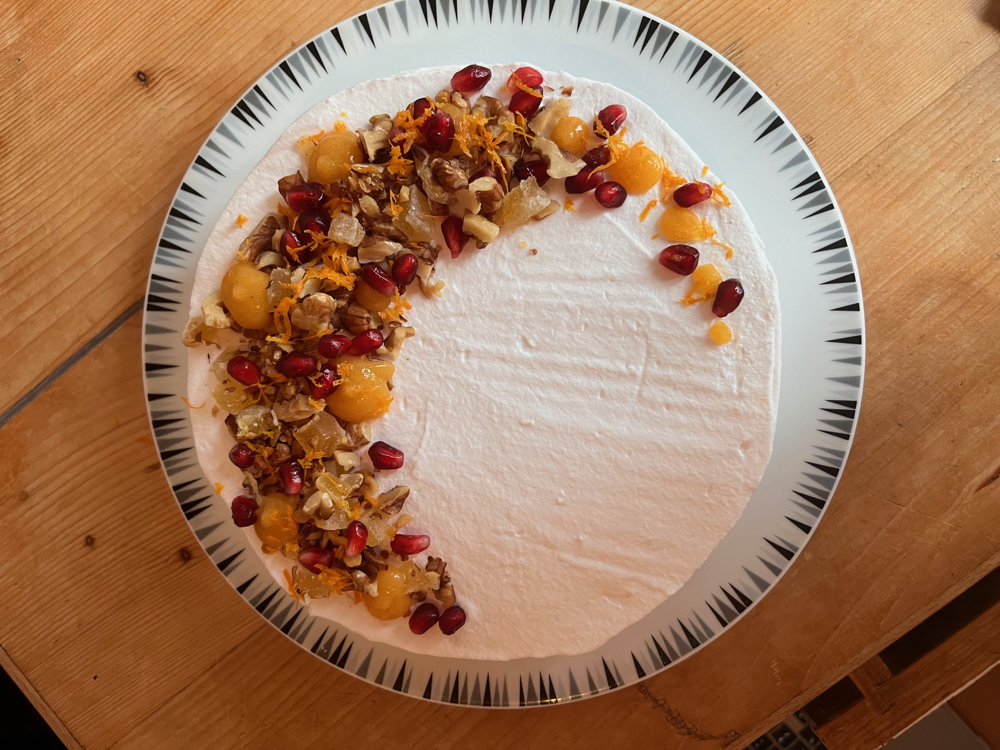

Gingerbread Cake

It might not be a man...but it just might be better, cake!
The classic gingerbread man gets a mean update in this rich and moist cake.
This cake is not without a kick, packed with three types of ginger: dried, fresh, and crystalized.
To top it all off, you can make this a rich winter treat, topped with whipped cream and nuts.
How to make this spicy gingerbread cake
Spicy may not be the most common descriptor for a cake. But, with three types of ginger, this cake does pack a punch.
If that's not your thing, you can always cut down the ginger (especially the fresh ginger), or if it really, really is,
throw in a bit more!
On the bright side, the whipped cream helps balance out any spice, making this a rich, and festive, treat.
Ingredients
- 1/2 cup butter, softened
- 1/2 cup dark brown sugar
- 1/4 cup molasses
- 1/4 cup dark corn syrup
- 1 egg, beaten
- 1/4 teaspoon salt
- 1/4 teaspoon dried ginger
- 1 1/2 cup flour
- 1 teaspoon baking soda
- 1/2 cup buttermilk
- 2 ounce knob of fresh ginger, peeled and grated
- 3/4 cup crystalized ginger, chopped
- optional, 3/4 cup walnuts, chopped
- 1 cup whipping cream, chilled
- optional, 1/4 cup pomegranate seeds
Method
- Preheat the oven to 350 degrees F (180 degrees C). Butter and line an 8-inch round cake pan with parchment paper.
- Cream the butter and sugar until light and fluffy. Add molasses, corn syrup, egg, and salt, and beat until smooth.
- In another bowl, mix the flour, baking soda, and dried ginger together.
- Fold half of the flour mixture into the butter and sugar. Then add half the butter milk and mix. Repeat.
- Stir in the freash ginger, 1/2 cup of crystalized ginger, and 1/2 cup of walnuts, if using.
- Pour the batter into the prepared cake pan and bake for 35 to 40 minutes, or until a toothpick comes out clean.
- While the cake is cooling, whip the whipped cream until it holds stiff peaks.
- Spread the whipped cream over the cake. (You can optionally cut the cake horizontally in half to create two layers.) Decorate the cake with the remaining 1/4 cup of crystalized ginger, 1/4 cup of walnuts, and pomegranate seeds.

Enjoy this cake with a cup of tea or coffee to complement the rich spices!